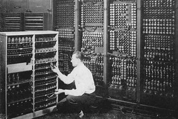
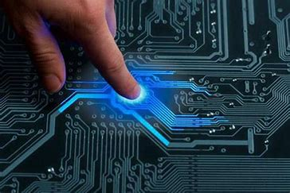
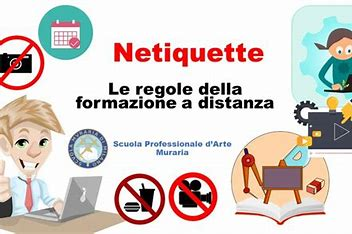

📜 La Storia della Tecnologia
La tecnologia accompagna l'umanità sin dai tempi più antichi. Già nella preistoria, gli uomini sviluppavano strumenti in pietra per cacciare e difendersi. Con il passare dei secoli, invenzioni come la ruota (circa 3500 a.C.) e la scrittura (circa 3000 a.C.) hanno rivoluzionato la società.
Nel Medioevo, la stampa di Gutenberg (1440) ha permesso la diffusione della conoscenza su larga scala. La Rivoluzione Industriale (XVIII-XIX secolo) ha portato allo sviluppo delle fabbriche e delle macchine a vapore, segnando l'inizio dell'era moderna.
Nel XX secolo, il progresso tecnologico ha accelerato con l'invenzione del computer (anni '40), di Internet (anni '60-'80) e, più recentemente, con l'intelligenza artificiale e la robotica.

🔬 La Scienza e la Tecnologia
La scienza e la tecnologia sono strettamente collegate: la prima fornisce le basi teoriche, la seconda applica queste conoscenze per creare strumenti utili.
Ad esempio, la scoperta dell'elettricità nel XVIII secolo ha portato allo sviluppo di dispositivi elettronici essenziali come lampadine, telefoni e computer.
Oggi, la tecnologia è usata in moltissimi campi della scienza: dalla medicina (con strumenti avanzati come la risonanza magnetica) all'astronomia (con telescopi spaziali come il James Webb).

✅ Aspetti Positivi della Tecnologia
- Comunicazione: Grazie a Internet e agli smartphone, possiamo comunicare con chiunque in pochi secondi.
- Accesso all’informazione: Enciclopedie digitali, corsi online e motori di ricerca ci permettono di imparare qualsiasi cosa.
- Progresso medico: La tecnologia ha migliorato la qualità della vita con vaccini, trapianti e strumenti diagnostici avanzati.
- Automazione: L'intelligenza artificiale e la robotica facilitano il lavoro in vari settori, dalla produzione industriale alla ricerca scientifica.
❌ Aspetti Negativi della Tecnologia
- Dipendenza: L’uso eccessivo di dispositivi elettronici può portare a problemi di salute mentale e fisica.
- Privacy e sicurezza: Condividere informazioni online espone al rischio di truffe e violazioni della privacy.
- Disinformazione: Fake news e manipolazione dei dati possono influenzare l’opinione pubblica.
- Perdita di posti di lavoro: L’automazione sostituisce alcune professioni, causando disoccupazione in alcuni settori.
🌐 Come Comportarsi in Rete
Internet è una risorsa straordinaria, ma è importante usarla con consapevolezza. Ecco alcune regole fondamentali:
- Proteggi i tuoi dati: Evita di condividere informazioni personali pubblicamente.
- Usa password sicure: Scegli password complesse e diverse per ogni account.
- Verifica le fonti: Prima di credere a una notizia, controlla che provenga da una fonte affidabile.
- Rispetta gli altri: Il cyberbullismo è un problema serio. Tratta gli altri con rispetto, anche online.
- Evita truffe e virus: Non aprire link sospetti e scarica software solo da siti affidabili.
 ⬅ Torna all'Indice